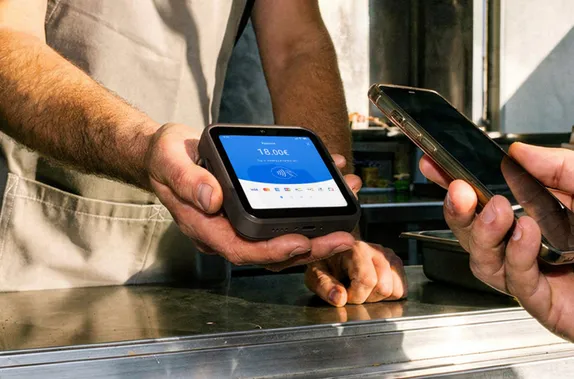
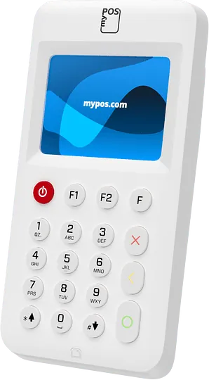
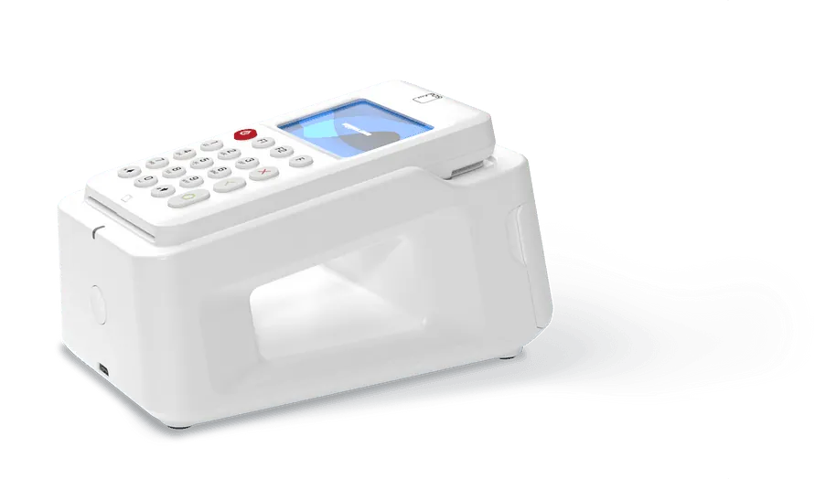
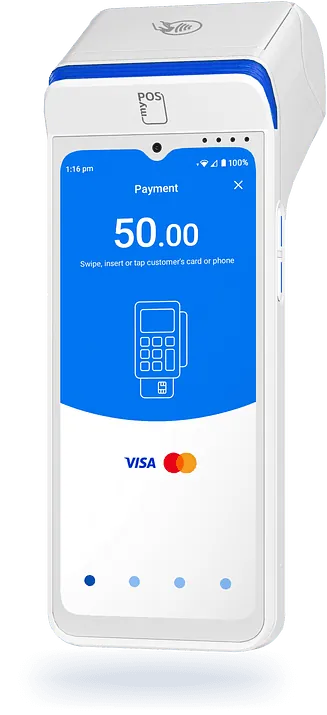

Transato reale
Partiamo da quanto incassi con le carte ogni mese. Da lì capiamo che terminale ti serve.
Rivenditore ufficiale myPOS
Sono Fabio, di Evolo Digital Studio, rivenditore ufficiale myPOS in Italia. Qui vedi i terminali e scegli in base a quanto incassi con le carte e a come lavori in cassa: negozio, bar, ristorante, studio o attività in mobilità. Canone e commissioni te li spiego io, quando mi scrivi, sul tuo volume.

Chi ti segue
Il conto e l’accredito restano myPOS. Io ti seguo sulla scelta del terminale e sull’attivazione. Mi scrivi, ti rispondo io e guardiamo insieme le condizioni adatte al tuo volume.
Partiamo da quanto incassi con le carte ogni mese. Da lì capiamo che terminale ti serve.
Portatile, con stampante o da banco Android. Dipende da sala, banco e numero di operatori.
Dopo la richiesta ti dico come attivare il terminale. Le condizioni economiche le chiariamo in quella conversazione.
Cosa include myPOS
L’account myPOS unisce incassi, conto e pagamenti anche fuori dal banco. Questi sono i punti che guardo con te, prima di parlare di condizioni.
Gli incassi arrivano sul conto myPOS in tempo reale, anche sabato, domenica e festivi.
Conto business dell’attività: i pagamenti con carta restano sullo stesso conto del POS.
Carta business collegata al conto, per le spese dell’attività.
Incassi anche se il cliente non è al banco: link di pagamento, QR e pagamenti a distanza.
Oltre ai terminali c’è Tap to Pay sull’app. Utile se ti sposti o se ti serve una seconda cassa leggera.
Vendite e movimenti li segui dal portale web e dall’app, giorno per giorno.
Terminali myPOS
Quattro terminali, più Tap to Pay se ti basta il telefono. Sotto li scegli in base al transato: è il modo per farmi capire la tua attività e ricontattarti con una proposta su misura.

POS portatile autonomo. Non si collega allo smartphone: ha SIM e Wi-Fi. Le ricevute partono via email, SMS o QR.
Terminale smart tascabile, con 4G e Wi-Fi. Sullo schermo vedi vendite, mance e rimborsi, senza tornare al PC.

Lettore più base di ricarica e stampante. Lo stacchi e lo porti al tavolo, lo appoggi e stampi lo scontrino.

POS Android con stampante veloce e schermo ampio. È il terminale da cassa piena, quando il flusso non si ferma.
Tap to Pay è il POS senza hardware: il cliente avvicina la carta al telefono, con l’app myPOS. Utile per partire, per i mercati o come seconda cassa leggera. Se il Bancomat, la stampa dello scontrino o un altro dettaglio sono decisivi per te, scrivilo nella richiesta: lo verifichiamo prima di proporti un terminale.
Configuratore
Tre passi, poi ti scrivo io. Prima la fascia di incassi con carta, poi il terminale. Le condizioni economiche non le calcoli qui: le preparo io sulla tua richiesta.
Commissioni
Canone e commissioni li preparo sulla tua richiesta: dipendono dal transato, dal tipo di carta e da come lavori in cassa. Nel configuratore mi dici la fascia e il terminale. In risposta ti spiego le condizioni sul tuo caso.
Invia la tua fascia di transato
Per negozi, bar e ristoranti ho scritto anche una pagina sul flusso di cassa: POS per negozi e attività.
Per attività
Lavoro con attività in tutta Italia che vogliono accettare carte e wallet, in negozio o in mobilità. Il terminale cambia con il banco, la sala e quante persone stanno in cassa. Per il flusso di un punto vendita ho scritto anche la pagina POS per negozi e attività.
In un negozio di quartiere contano il contactless veloce e, se la chiedono, la ricevuta. Flex o Go Combo coprono il banco. Con più persone in cassa e un flusso che non si ferma si parte da myPOS Ultra, anche su una seconda postazione.
Al banco serve velocità. In sala serve un terminale che si porta al tavolo. Go Combo fa le due cose: si stacca dalla base e stampa lo scontrino quando lo riappoggi. Con più coperti e più operatori il punto di partenza è Ultra.
Studio, salone, artigiano o attività appena aperta: pochi pagamenti carta e tanta mobilità. Go 2 o Tap to Pay sull’app bastano spesso per partire, senza allestire una cassa fissa.
Mercati, domicilio, fiere, strutture ricettive. Il terminale lavora con SIM e Wi-Fi, oppure incassi dal telefono. Gli accrediti arrivano sul conto myPOS anche se quel giorno non sei in negozio, festivi compresi.
Hai già un terminale di un altro fornitore? Scrivimi il transato e come lavori in cassa: la proposta la preparo in risposta.
FAQ
Sono Fabio, di Evolo Digital Studio, rivenditore ufficiale myPOS. Ti seguo su scelta e attivazione del terminale. Il conto e l’accredito restano myPOS.
Al banco e in sala servono velocità e, spesso, la ricevuta stampata. Go Combo si stacca e si porta al tavolo. Con più coperti e più operatori il punto di partenza è Ultra.
Per un negozio di quartiere bastano spesso Flex o Go Combo. Con più persone in cassa e un flusso continuo si parte da Ultra, anche su più di una postazione.
Sì. Go 2 e Flex lavorano in mobilità con SIM e Wi-Fi. Tap to Pay usa il telefono. Link di pagamento e QR servono quando il cliente non è al banco.
Sì. Gli incassi arrivano sul conto myPOS in tempo reale, anche sabato, domenica e festivi.
Nel configuratore indichi la fascia: sotto i 5.000 €, da 5.000 a 10.000, da 10.000 a 25.000, da 25.000 a 50.000 oppure oltre 50.000 € al mese. Poi scegli il terminale e invii la richiesta.
Sì. Indica la fascia di transato e, nelle note, che carte accetti e se stampi lo scontrino. La proposta arriva in risposta, sul volume reale.
Tre passi, una richiesta. Ti rispondo con il terminale adatto e con le condizioni da vedere insieme.
Apri il configuratore Ho già un POS